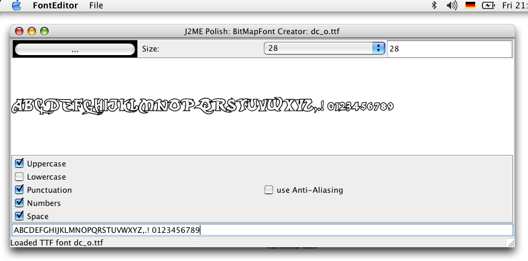

The StringItem is responsible for viewing text and is used as a basis for many J2ME Polish components like TextFields, screen titles, screen tickers, or item labels.

You can vary the design of StringItems greatly by using bitmapfonts or text-effects, the above design uses following settings:
title {
//#if polish.midp2 and polish.hasFloatingPoint
text-effect: alien-glow;
//#endif
layout: horizontal-center | horizontal-expand;
font {
face: proportional;
size: large;
style: bold;
color: #fff;
}
background-color: #fff;
}
Here's a list of all StringItem specific design attributes:
| CSS Attribute | Default | Values | Explanation |
|---|---|---|---|
| font-color | black | color definition |
Either a direct definition or a reference to a color from the colors section of your polish.css file.
font-color: #a00; |
| font-style | normal | normal/default/plain, bold, italic/cursive, underlined/underline |
The style of the font - you can mix different styles:
font-style: bold | italic; |
| font-size | normalsmall/little, normal/default/medium, large/big | The size of the font. | |
| font-face | normal | system/default/normal, proportional, monospace |
The font face - often there are only two faces available: proportional and monospace - the system font face is
usually the proportional one.
font-face: monospace; |
| font-bitmap | - | URL | URL of the bitmapfont that should be used:
font-bitmap: url( arial.bmf ); |
| text-horizontal-adjustment | 0 | integer |
Adjusts the text by the specified number of pixels horizontally. Negative values move the text to the left.
text-horizontal-adjustment: -5; |
| text-vertical-adjustment | 0 | integer | Adjusts the text by the specified number of pixels vertically. Negative values move the text to the top. |
| text-effect | - | see text-effects |
text-effect: shadow; |
| text-wrap | true | true, false | Defines whether the text should be wrapped into the next row if it is too long for the current one.
text-wrap: false; |
| text-wrap-animate | true | true, false | You can deactivate animations for texts that should not be wrapped and which are too long for a single line by setting
text-wrap-animate to false.
text-wrap-animate: false; |
Bitmap fonts allow you to use any True Type Font in your application. Use the font-editor situated in the
${polish.home}/bin folder to create bitmap fonts (*.bmf) out of any true type fonts. Such
bitmap fonts can be used by the J2ME Polish GUI with the font-bitmap CSS-attribute or directly with the
de.enough.polish.util.BitMapFont
utiliy class.

Since the font-editor does no yet optimize the generated font-images, you might want to optimize the images outside of the editor: Just select "File -> Save PNG-Image As..." and edit the image in your favorite image editing program, e.g. The Gimp. You might also want to use PNG-image optimizer like PNG-Crush (http://pmt.sourceforge.net/pngcrush/) or PNG-Out (http://advsys.net/ken/utils.htm#pngout). When you're done, just reload the PNG-image by selecting "File -> Open PNG-Image".
You can also fine-tune every aspect of the bitmap-font by opening it in the BinaryEditor: select "File -> Open in Binary Editor" to do so.
While editing bitmap fonts you have to take into account any character that you may need to render with that font. You need to include these characters in the font editor.
font-bitmap: url( fantasy.bmf );
Text effects provide you with an easy way to spice up your fonts without needing to care about sizes and availability of characters like for bitmap fonts. You can even go and code your own text-effect!
Please look here for a complete list of available text-effects.
Program StringItems with J2ME Polish like normal MIDP 2.0 StringItems, for example:
//#style itemText
StringItem item = new StringItem("info: ", "Welcome to J2ME Polish!");
form.append( item );